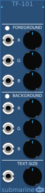

The TF-101 is a format controller for the TD-xxx Text Display devices. It has controls for the text color, background color and text size.
Format information is passed from the TF-101 to any TD-xxx device by using it as an extension. If the TF-101 (or TF-102) is placed directly to the left or right of a TD-xxx device, it will control the formatting of the TD-xxx device without the need for cables
Each color is controlled using three CV/Knob combinations, controlling the Red, Green and Blue components separately. A full-color LED on the TF-101 indicates the color mix selected.
The TF-102 is a similar device to the TF-101 but it does not feature control knobs. It is a small form-factor device where you wish to control formatting purely through CV-automation.